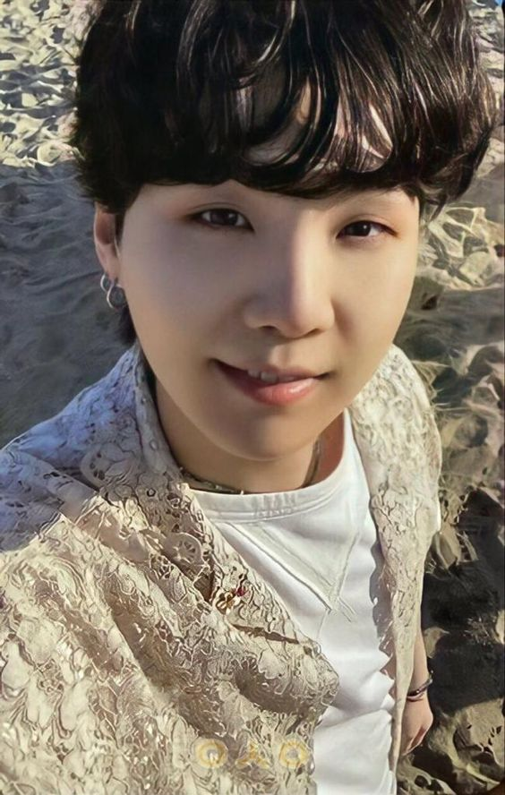
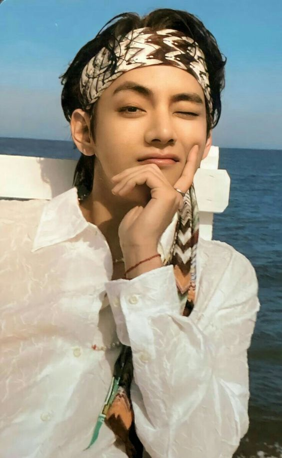
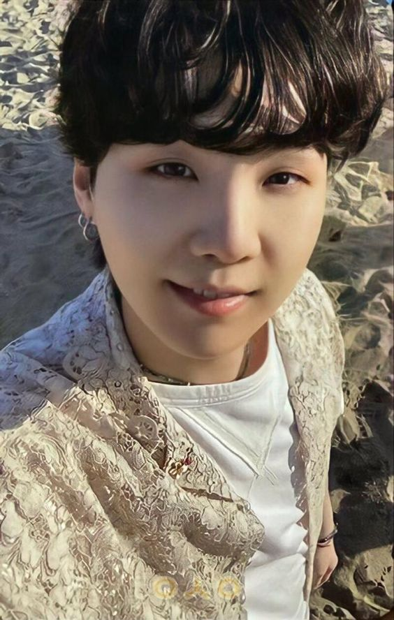
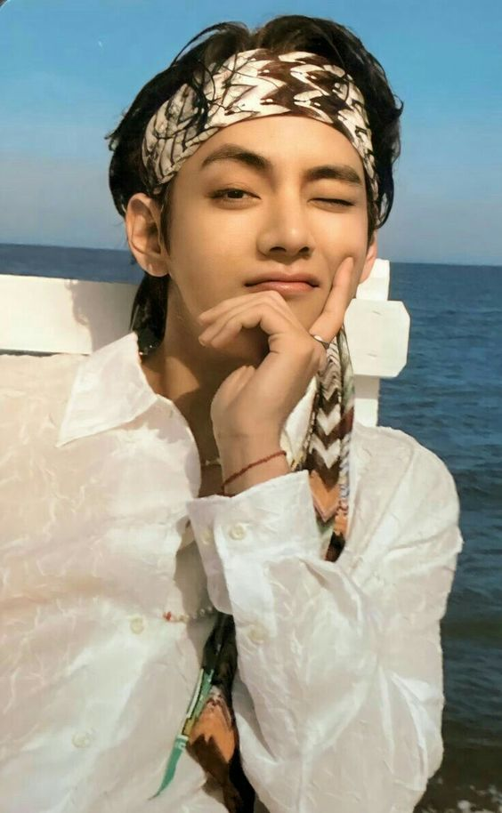

- TAMBIÉN TE INVITAMOS A VER MÁS SOBRE: (HAZ CLICK EN CUALQUIERA DE LAS IMÁGENES QUE SE ENCUENTRAN ABAJO)
Volver a la página principal "BTS 방탄소년단 aquí"
 RM |  JIN |  SUGA |  J-HOPE |  TAE HYUN |  JUNGKOOK |
Park Ji-min
박지민
26 años
13 de octubre
1995
Libra
A
Park Ji-min, conocido únicamente como Jimin, trabaja como cantante, letrista y bailarín. Es uno de los miembros que no cuenta todavía con producciones individuales, pero en los discos de la banda cuenta con diferentes solos. Entre ellos se encuentran Serendipity, Lie y Filter. Nace en el distrito de Geumjeong en Busan. Tiene un hermano más pequeño. Durante su adolescencia fue a la academia de baile Just Dance, donde aprendió el baile denominado pop and lock. Antes de empezar como trainee en Big Hit, fue a la academia de arte de Busan y era uno de los mejores en el departamento de danza moderna. Luego de seguir una sugerencia de uno de sus profesores, se presenta ante Big Hit Entertainment en una audición. Una vez que supera las audiciones en el 2012, se transfiere a la escuela de artes coreanas, graduándose en el 2014. También tiene estudios universitarios, dos estudios virtuales en administración y entretenimiento.
Fue el presidente de la clase por 9 años seguidos y se graduó con las calificaciones más altas de su clase.
Es el último miembro en haberse unido al grupo.
Sus colores favoritos son el azul y negro.
Su número favorito es el 3.
Sus comidas favoritas son el cerdo, el pato, el pollo, las frutas y el kimchi (un plato típico asiático con repollo fermentado).
No le gusta la espinaca.
Sus ídolos son el solista Rain y Taeyang de BIGBANG.
Es cinturón negro en taekwondo
Para BT21 de la línea (FRIENDS), el personaje que creó se llama Chimmy y es un perro.
Volver a la página principal "BTS 방탄소년단 aquí"
| RM | JIN |  SUGA | J-HOPE |  TAE HYUN | JUNGKOOK |